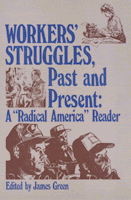

A rare combination of labor and social history with contemporary studies of labor movement politics
A rare combination of labor and social history with contemporary studies of labor movement politics


 A rare combination of labor and social history with contemporary studies of labor movement politics
A rare combination of labor and social history with contemporary studies of labor movement politics

|  |
Workers' Struggles, Past and PresentA "Radical America" Readeredited by James Greenpaper EAN: 978-0-87722-315-3 (ISBN: 0-87722-315-7) |
"Green's [anthology] shows that RA has played a part in one of the intellectual advances of our time—the revolution in American social history...."
—Paul Berman, Village Voice Literary Supplement
Selected from the pages of Radical America, these articles are a rare combination of labor and social history and contemporary studies of labor movement politics and workplace struggles.
"A valuable collection."
—Maurice Isserman, The Nation
James Green is editor of Radical America and director of the Labor Studies Program at the University of Massachusetts in Boston. His is the author of Grass-Roots Socialism and The World of the Worker: Labor in Twentieth-Century America.
© 2015 Temple University. All Rights Reserved. This page: http://www.temple.edu/tempress/titles/294_reg.html.